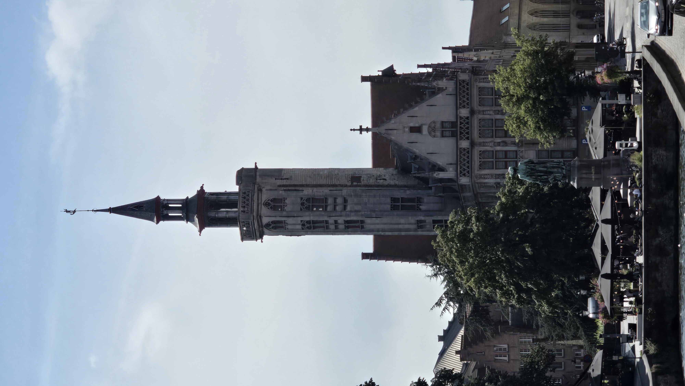
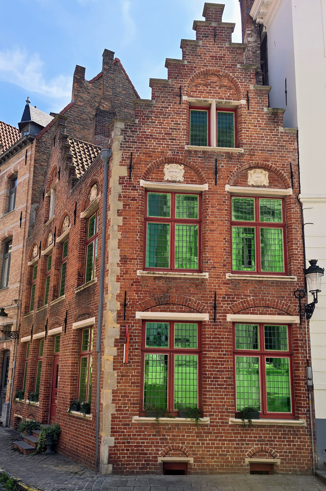

Simon Stevinplein, Bruges
NoteLunch spot confirmed as Poules Moules restaurant on Simon Stevinplein via matching signage/menu in the photo. A second photo (three hours later) shows an ornate stone archway with a quartered heraldic shield; the exact building could not be confirmed, though the coordinates place it a block from Simon Stevinplein, near St Salvator's Cathedral.
Lunch landed at Poules Moules, tucked into a restored 17th-century stepped-gable house on Simon Stevinplein, a square that itself once sat atop Bruges' medieval butchers' hall before it was torn down in 1819, presumably once the smell became a civic concern. The square takes its current name from the bronze statue of Simon Stevin, the Bruges-born mathematician and engineer who pioneered decimal fractions, erected here in 1846 for reasons that surely made complete sense to the committee involved. True to its name, the restaurant's specialty is the classic Belgian pairing of mussels and fries -- the pot of moules and towering frites in the photo are about as textbook a Flemish lunch as it is possible to order.
The second photo in this cluster, taken later in the afternoon, shows a grand carved stone doorway crowned with a coat of arms -- evidently a merchant's house or institutional entrance in the same quarter near the cathedral, its specific identity lost to history, or at least to this particular photograph.

